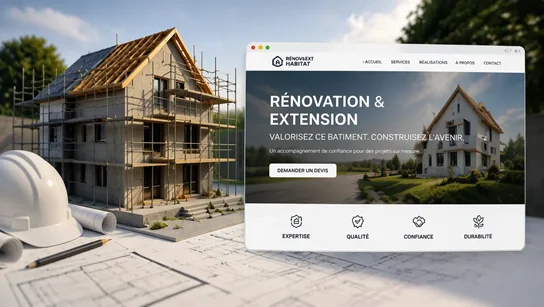

Votre vitrine, partout et tout le temps
Vos clients sont sur internet avant même de vous appeler. Je crée des sites web et des applications qui transforment votre savoir-faire en une vitrine digitale moderne. Un outil de travail conçu pour résister à la réalité du terrain et mettre en valeur votre entreprise, où que vos clients se trouvent en Nouvelle-Aquitaine.